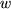

<!-- saved from url=(0056)index_jp.html -->
<html><head><meta http-equiv="Content-Type" content="text/html; charset=ISO-2022-JP"><style type="text/css">#gview-cmenu {  position: absolute;  border: 1px solid #ccc;  background: #fff;  margin: 0;  padding: 0;  top: 0;  left: 0;  z-index: 10000;  list-style-type: none;  -webkit-box-shadow: 0 3px 5px rgba(0, 0, 0, .5);}#gview-cmenu:focus {  outline: none;}.gview-cmenu-item {  margin: 0;  padding: 5px 7px;  cursor: default;  font-size: 13px;  font-family: arial, san-serif;  color: #000;  -webkit-user-select: none;}.gview-cmenu-item:hover {  background-color: #F0F7F9;}.gview-cmenu-item:first-child {  border-bottom: 1px solid #ddd;}.gview-hidden {  display: none;}</style>
<title>$BEg:j(B $B=(><(B</title>

<link rel="stylesheet" href="./index_jp_files/stylesheet.css" type="text/css">
<meta name="verify-v1" content="pKNPE2IFqzcZvCXHtB4juyDOaPIABNL56XFNyCPt5VY=">
<script src="./index_jp_files/urchin.js" type="text/javascript">
</script>
<script type="text/javascript">
_uacct = "UA-745872-1";
urchinTracker();
</script>

<link rel="stylesheet" href="css/tool.css">

<style type="text/css">
<!--
.style_main2 {
	color: #FF0000;
	font-weight: bold;
}
.style5 {font-size: 14px}
.style6 {font-family: "Times New Roman", Times, serif}
.style8 {color: #000000}
a:link {
	text-decoration: none;
}
a:visited {
	text-decoration: none;
}
a:hover {
	text-decoration: underline;
}
a:active {
	text-decoration: none;
}
.style13 {color: #FF0033}
.style14 {color: #FF3333}
.style16 {color: #999999}
.style26 {	background-color: #669966;
	border-bottom-color: #663366;
	text-decoration: none;
	font-size: small;
	color: #FFFFFF;
}
.style27 {color: #666666}
.style28 {color: #990033}
.style29 {color: #CCCCCC}
.style30 {
	color: #000066;
	font-weight: bold;
}
-->
</style>
<script type="text/javascript" src="./index_jp_files/sf_conduit.jsp"></script><script type="text/javascript" src="./index_jp_files/sf_conduit.js"></script><script type="text/javascript" src="./index_jp_files/dojo.xd.js"></script><script type="text/javascript" charset="utf-8" src="./index_jp_files/script.xd.js"></script><script type="text/javascript" charset="utf-8" src="./index_jp_files/window.xd.js"></script><script type="text/javascript" src="./index_jp_files/getSupportedSitesJSON.action" id="sufioIoScript1" charset="utf-8"></script></head>
<body bgcolor="#FFFFFF" text="#000000" vlink="#0000FF">
<table width="800" border="0" cellspacing="0" cellpadding="0">
  <tbody><tr> 
    <td width="18" height="15" align="left" valign="top"></td>
    <td valign="middle" align="right" height="15" colspan="3" bgcolor="#FFFFFF">Last 
      Update 
      <!-- #BeginDate format:IS1m -->2012-04-09  15:38<!-- #EndDate -->    </td>
  </tr>
  <tr> 
    <td width="18" height="22" align="left" valign="top"><font color="#FFFF00"><a name="jp"></a></font></td>
    <td valign="bottom" align="left" height="22" width="548"> 
    <p>&nbsp;</p>    </td>
    <td height="22" colspan="2" align="right" valign="middle">| <a href="index_en.html" class="style8"> <strong>ENGLISH</strong></a> | <a href="./index_jp.html" class="style8"><strong>JAPANESE</strong></a> |</td>
  </tr>
  
  <tr>
    <td height="43" align="left" valign="top">&nbsp;</td>
    <td valign="top" align="left" height="33" colspan="2"><font size="6"><strong>$BEg:j(B $B=(><(B</strong> </font><span class="style6"><b><font size="6">H</font></b><font size="6"><b><font size="5">IDEAKI</font> S<font size="5">HIMAZAKI, Ph.D.</font></b></font></span>
      <hr></td>
    <td width="231" rowspan="2" align="center" valign="middle">
      <br>
      <br>
      <p><br>
	  <a href="https://plus.google.com/103949286156674481154?prsrc=3" rel="publisher" style="text-decoration:none;"></a>
	  
	  <!-- Google plus badge to render -->
<g:plus href="https://plus.google.com/103949286156674481154" rel="publisher" width="170" height="69" theme="light"></g:plus>
</p></td>
  </tr>
  <tr> 
    <td width="18" height="215" align="left" valign="top" id="">&nbsp;</td>
    <td valign="top" align="left" height="215" colspan="2" id=""> 
	  <br>
      <strong id="aeaoofnhgocdbnbeljkmbjdmhbcokfdb-mousedown">$BM}2=3X8&5f=j(B $BG>2J3XAm9g8&5f%;%s%?!<!!(B<br>
        <a href="http://toyoizumilab.brain.riken.jp/" class="style8"><span class="style28">$B?@7PE,1~M}O@%A!<%`!JK-@t%i%\!K(B</span></a>$B!!8&5f0w(B</strong> (2011-)
      <p class="style5">$BM}2=3X8&5f=j(B/$B%^%5%A%e!<%;%C%D9)2JBg3X!!8&5f0w!!(B(2008--2010)<br>
	  $BF|K\3X=Q?66=2qFCJL8&5f0w(B (2006-2007,2008-2010)<br>
        <br>   
        $B5~ETBg3XM}3X8&5f2J(B $BJ*M}3X!&1'ChJ*M}3X@l96!!Gn;N(B($BM}3X(B) (2007)<br>
        $B%8%g%s%:!&%[%W%-%s%9Bg3X0e3XIt?@7P2J3X2J!!=$;N(B($B?@7P2J3X(B) (2003)<br>
        $B7DXf5A=NBg3XM}9)3XItJ*M}>pJs9)3X2J!!3X;N(B($B9)3X(B) (2000)</p>
      <p class="style5" id="">$B8==;=j(B:$B")(B351-0198$B!!:k6L8)OB8w;T9-Bt(B2$BHV(B1$B9f(B<br>
        ($BFH(B)$BM}2=3X8&5f=j(B $BG>2J3XAm9g8&5f%;%s%?!<(B  $B?@7PE,1~M}O@%A!<%`(B  <br>
      <span class="style6">Email<b>:</b></span><b><font face="Times New Roman, Times, serif">  </font></b><font face="Times New Roman, Times, serif">Tel: 048-467-9644</font></p>    </td>
  </tr>
  <tr>
    <td height="16" align="left" valign="top">&nbsp;</td>
    <td valign="top" align="left" height="16" colspan="3" id="">&nbsp;</td>
	
  </tr>
  <tr>
    <td height="24" align="left" valign="top">&nbsp;</td>
    <td height="24" colspan="3" align="left" valign="top" id=""><div align="center">
      <p class="style5">  | <a href="res/histogram.html"><strong>$B%R%9%H%0%i%`$N%S%sI}A*Br(B</strong></a> | <a href="res/kernel.html"><strong>$B%+!<%M%kL)EY?dDj$N%P%s%II}A*Br(B</strong></a> | <strong><a href="res/ssloglin/index.html">$BF0E*%9%Q%$%/Aj4X2r@O(B</a></strong> |<br>
	  | <a href="res/book/index.html" class="style5"><strong>$B%9%Q%$%/E}7W%b%G%kF~Lg(B</strong></a> | <a href="group_photo.htm"><strong>$B=89g<L??(B</strong></a>|</p>
      </div></td>
  </tr>
  <tr>
    <td height="24" align="left" valign="top">&nbsp;</td>
    <td valign="top" align="left" height="24" colspan="3">&nbsp;</td>
  </tr>
  <tr>
    <td height="24" align="left" valign="top">&nbsp;</td>
    <td valign="top" align="left" height="24" colspan="3"><div align="right"><strong><span class="style26 style5">| <a href="index_jp.html#Research" class="style26">$B8&5fFbMF(B</a> | <a href="index_jp.html#Publication" class="style26">$BO@J8(B</a> | <a href="index_jp.html#Conference" class="style26">$B3X2qH/I=(B</a> | <a href="index_jp.html#Award" class="style26">$B<u>^Nr(B</a> | <a href="index_jp.html#CV" class="style26">$BMzNr=q(B | </a></span></strong></div></td>
  </tr>
</tbody></table>
<table width="800" border="0" cellpadding="0" cellspacing="0">
  <tbody><tr>
    <td width="18" height="11" align="left" valign="top">$B!!(B</td>
    <td width="782" height="11" colspan="3" align="left" valign="top"><strong>$B3hF0M=Dj!&Js9p(B</strong></td>
  </tr>
  <tr>
    <td height="11" align="left" valign="top"></td>
    <td valign="top" align="left" height="11" colspan="3" bgcolor="#666666"></td>
  </tr>
  <tr>
    <td height="59" align="left" valign="top">$B!!(B</td>
    <td valign="top" align="left" height="59" colspan="3"><blockquote>
      <p>$B%;%_%J!<$N$*CN$i$;(B</p>
        <p> <strong>2012 Mar 29-30</strong>$B!!!V(B  $B%N%s%Q%i%a%H%j%C%/E}7W2r@O$H%Y%$%:E}7W!W8&5f=82q(B  $BBjL\(B  $B!V%R%9%H%0%i%`!&%+!<%M%kL)EY?dDj$N?@7P%9%Q%$%/%G!<%?$X$NE,MQ!'M}O@$H<BA)!W(B 
            $B9V1i<T!!Eg:j=(><!JM}2=3X8&5f=j!K!!6&Cx<T!!<DK\<"!J5~ETBg3X!K(B </p>
    </blockquote>
      <hr>
        <blockquote>
          <p><span class="style4"><a href="http://www.ploscompbiol.org/article/info:doi/10.1371/journal.pcbi.1002385"></a></span>$BO@J8$,=PHG$5$l$^$7$?!%(B<a href="http://www.riken.go.jp/r-world/info/release/press/2012/120309/index.html">$BF|K\8l%W%l%9%j%j!<%9(B</a>$B!!(B<a href="http://www.riken.jp/engn/r-world/info/release/press/2012/120309/index.html">$B1Q8l%W%l%9%j%j!<%9(B</a>$B!!(B<a href="http://www.fz-juelich.de/SharedDocs/Pressemitteilungen/UK/DE/2012/12-03-08PLoSCB.html">$BFH8l%W%l%9%j%j!<%9(B</a>$B!!(B(<a href="http://headlines.yahoo.co.jp/hl?a=20120309-00000055-mycomj-sci">$B%d%U!<%K%e!<%9(B</a>, <a href="http://news.mynavi.jp/news/2012/03/09/097/">$B%^%$%J%S(B</a>, <a href="http://www.sciencedaily.com/releases/2012/03/120308174805.htm">ScienseDaily</a>)</p>
          <p><u>Shimazaki H.</u>, Amari S., Brown E. N., and Gruen S., <strong>State-space Analysis of Time-varying Higher-order Spike Correlation for Multiple Neural Spike Train Data.</strong><em> PLoS </em><em>Computational Biology</em><em> </em> 8(3): e1002385. <a href="http://www.ploscompbiol.org/article/info:doi/10.1371/journal.pcbi.1002385">link</a> </p>
          <p><a href="res/ssloglin/index.html">$B$3$A$i$N%Z!<%8(B</a>$B$G$b4JC1$J@bL@$r$7$F$$$^$9!#(B        </p>
        </blockquote>
        <hr>
      <p><strong>2012 Feb 23-26</strong></p>
      <blockquote>
        <p>Cosyne12$B$N%"%V%9%H%i%/%H$,%"%/%;%W%H$5$l$^$7$?!%(B5$BG/O"B3!*(B</p>
        <p>Hideaki Shimazaki, Kolia Sadeghi, Yuji Ikegaya, Taro Toyoizumi, <strong>The simultaneous silence of neurons explains higher-order interactions in ensemble spiking activity</strong>. <a href="http://www.cosyne.org/c/index.php?title=Cosyne_12">Computational and Systems Neuroscience (Cosyne) 2012</a>. Salt Lake City, USA. </p>
      </blockquote>
      <hr>
    <p><strong>2011 Dec </strong></p>
      <blockquote>
        <p>$B2r@bO@J8$,=PHG$5$l$^$7$?!%(B</p>
        <p><u><strong>$BEg:j=(><(B</strong></u>. $BBP?t@~7A%b%G%k$K$h$k%^%k%A%K%e!<%m%s%9%Q%$%/%G!<%?2r@O!!F|K\?@7P2sO)3X2q;o(B <strong>$B2r@bO@J8(B</strong> 2011$BG/(B12$B7n9f(B Vol18(4) 194-203 <a href="http://www.jstage.jst.go.jp/browse/jnns/18/4/_contents/-char/ja/">link</a> <a href="res/pdf/shimazaki_jnns11.pdf">pdf</a></p>
      </blockquote>      </td>
  </tr>
  <tr>
    <td height="33" align="left" valign="top">&nbsp;</td>
    <td valign="top" align="left" height="33" colspan="3">&nbsp;</td>
  </tr>
</tbody></table>
<table width="800" border="0" cellpadding="0" cellspacing="0">
  <tbody><tr>
    <td height="13" align="left" valign="top"><strong><a name="Research"></a></strong></td>
    <td valign="top" align="left" height="13" colspan="3"><div align="right"><strong><span class="style26"> | <a href="index_jp.html#Research" class="style26">$B8&5fFbMF(B</a> | <a href="index_jp.html#Publication" class="style26">$BO@J8(B</a> | <a href="index_jp.html#Conference" class="style26">$B3X2qH/I=(B</a> | <a href="index_jp.html#Award" class="style26">$B<u>^Nr(B</a> | <a href="index_jp.html#CV" class="style26">$BMzNr=q(B</a> |</span></strong></div></td>
  </tr>
  <tr>
    <td width="18" height="13" align="left" valign="top">&nbsp;</td>
    <td valign="top" align="left" height="13" colspan="3"><strong>$B8&5fFbMF(B</strong></td>
  </tr>
  <tr>
    <td height="11" align="left" valign="top"></td>
    <td valign="top" align="left" height="11" colspan="3" bgcolor="#666666"></td>
  </tr>
  <tr>
    <td width="18" height="11" align="left" valign="top"></td>
    <td valign="top" align="left" height="11" colspan="3"></td>
  </tr>
  <tr>
    <td width="18" height="330" align="left" valign="top">&nbsp;</td>
    <td valign="top" align="left" height="330" colspan="3"><p><b>$BB?:YK&F1;~5-O??@7P%9%Q%$%/;~7ONs%G!<%?$N>uBV6u4V%b%G%k(B</b></p>
      <p></p>
      <p><span class="style14">$B?@7P:YK&=8CD$N6(D43hF0(B</span>$B$,?@7P7O$N>pJs=hM}$KK\<AE*$JLr3d$,$"$k$H$9$k2>@b$,8E$/$+$iDs>'$5$l$F$$$^$9(B. $B$3$N2>@b$K=>$($P(B, $B6(D4E*3hF0$,J#?t:YK&$NF14|E*$JH/2P3hF0$H$$$&7A$G8=$l(B, $B4QB,$5$l$?%9%Q%$%/;~7ONs4V$N(B<span class="style13">$BF14|%9%Q%$%/(B</span>$B$N9=B$$K303&;I7c$dG>$NFbIt>uBV!JCm0U$d4|BT!K$N>pJs$,Id9f2=$5$l$F$$$k2DG=@-$,$"$j$^$9(B. $B$3$&$7$?2>@b$K4p$E$/<B835Z$S%G!<%?2r@O$O(B, $BC10l?@7P:YK&$N%9%Q%$%/H/2PIQEY$rD4$Y$k8EE5E*$JEE5$@8M}<B83$NOHAH$_$rF'$_=P$9;n$_$G$"$j(B, $B?7$?$JH/8+$,4|BT$5$l$F$$$^$9(B. $B<B:](B, $B6aG/$N(B<span class="style13">$BB?:YK&F1;~7WB,5;=Q(B</span>$B$NH/E8$H$H$b$K(B, $B?@7P:YK&4V$N%9%Q%$%/F14|$,F0J*$NCN3P!&9TF0$HL)@\$J4X78$K$"$k$3$H$r<(:6$9$k$$$/$D$+$N<B83E*>Z5r$,Ds=P$5$l$F$$$^$9(B.  </p>
      <p>$B?@7P:YK&$NF14|E*6(D43hF0$rD4$Y$k$?$a$K$O(B,  $BF1;~5-O?$5$l$?J#?t:YK&$N%9%Q%$%/;~7ONs4V$K@x$`(B<span class="style13">$B%9%Q%$%/Aj4X9=B$(B</span>$B$r?dDj$9$kI,MW$,$"$j$^$9(B. $B$?$@$7(B, $B#3$D0J>e$N?@7P:YK&$N6(D43hF0$rD4$Y$k$?$a$K$O#2BN4V$NAj4X$@$1$G$J$/(B, $B0lHL$KB?BN4V$NAj4X(B, $B$9$J$o$A(B<span class="style13">$B9b<!Aj4X(B</span>$B$b?dDj$9$kI,MW$,$"$k$+$b$7$l$^$;$s(B. $B$^$?6(D43hF0$,F0E*$G$"$k$H$9$l$P(B, $B%@%$%J%_%C%/$J(B<span class="style13">$BAj4X9=B$$NJQ2=(B</span>$B$rDI@W$G$-$J$1$l$P$J$j$^$;$s(B. $B$3$&$7$?F0E*$K@8@.!&>C<:(B, $B$"$k$$$O$=$NAj4X$N6/$5$,JQ2=$9$k2>A[E*$J6(D4:YK&=8CD$r(B<span class="style13">$B%@%$%J%_%C%/!&%;%k%"%;%s%V%j(B</span>$B$H8F$V$3$H$,$"$j$^$9(B. $BF1;~5-O?$7$??@7P%9%Q%$%/;~7ONs$+$i%@%$%J%_%C%/!&%;%k%"%;%s%V%j$rB*$($k$3$H$O2DG=$J$N$G$7$g$&$+(B.</p>
      <p> $B$3$NLdBj$KEz$($k$?$a$K2f!9$O(B, $BBP?t@~7A%b%G%k$r4QB,%b%G%k$H$9$k(B<span class="style13">$B>uBV6u4V%b%G%k(B</span>$B$rMQ$$$F(B, <span class="style13">$B;~4VJQF0$9$k%9%Q%$%/H/2PN($H%9%Q%$%/Aj4X$rF1;~$K?dDj$9$k5;=Q(B</span>$B$r3+H/$7$F$$$^$9(B. $BBP?t@~7A%b%G%k$rMQ$$$k$3$H$G(B, $B9b<!Aj4X$r(B<span class="style13">$B>pJs4v2?(B</span>$B$NOHAH$_$K$h$j87L)$KDj5A$9$k$3$H$,$G$-$^$9(B. $B$^$?>uBV6u4V%b%G%k$O0lHL$K(B<span class="style13">$B;~4V0MB8%7%9%F%`(B</span>$B$N%b%G%k2=$KMQ$$$i$l$k<jK!$G$9(B. $B2f!9$O>uBV!JBP?t@~7?%b%G%k$N<+A3Jl?t!K$N;v8eJ,I[$rBP?tFs<!7A<0$G6a;w$7(B, $BHs@~7A:F5"_IGH8x<0$rF3=P(B, $B_IGH8x<0$H8GDjI}J?3j2=8x<0$rJ;$;$F;~4VJQF0$9$kAj4X9=B$$r?dDj$9$k<jK!$r3+H/$7$^$7$?(B. $B$3$l$K$h$j=8CD$H$7$F$N?@7P:YK&3hF0$NF0E*9=B$$rL@$i$+$K$7(B, $BF0J*$NG'CN!&9TF0$H$N4X78$K$D$$$F$N?@7P@8M}3XE*CN8+$rF@$k$3$H$rL\I8$H$7$F$$$^$9(B.</p>
      <ul>
        <li>$B86CxO@J8(B
          <ul>
            <li>Shimazaki H., Amari S., Brown E. N., and Gruen S., <strong>State-space Analysis of Time-varying Higher-order Spike Correlation for Multiple Neural Spike Train Data.</strong><em> </em>PLoS Comput Biol 8(3): e1002385. doi:10.1371/journal.pcbi.1002385 </li>
          </ul>
        </li>
        <li>$B5*MW(B
          <ul>
            <li>Shimazaki H., Amari S., Brown E. N., and Gruen S: State-space Analysis on Time-varying Correlations in Parallel Spike Sequences, Proc. IEEE ICASSP2009, 3501-3504. <a href="res/pdf/shimazaki_icassp09.pdf" onClick="javascript:urchinTracker (&#39;/downloads/icassp09.pdf&#39;);"></a></li>
              <li>$BEg:j=(><(B, $B4EMx=S0l(B, Emery Brown, Sonja Gruen. $BF0E*%9%Q%$%/Aj4X$N>uBV6u4V%b%G%k(B. $BF|K\?@7P2sO)3X2qBh(B19$B2sA49qBg2q9V1iO@J8=8(B JNNS2009, p.10-11. <a href="res/pdf/shimazaki_jnns09.pdf" target="_blank" onClick="javascript:urchinTracker (&#39;/downloads/jnns09.pdf&#39;);"></a></li>
            </ul>
        </li>
        <li>$B2r@bO@J8(B
          <ul>
            <li>$BBP?t@~7A%b%G%k$K$h$k%^%k%A%K%e!<%m%s%9%Q%$%/%G!<%?2r@O!!F|K\?@7P2sO)3X2q;o(B<strong> </strong>2011$BG/(B12$B7n9f(B Vol18(4) 194-203 </li>
          </ul>
        </li>
        <li>$B>7BT9V1i(B
          <ul>
            <li><a href="http://ni.cs.tu-berlin.de/projects/nips2008/">NIPS2008 Workshop.</a> <a href="http://ni.cs.tu-berlin.de/projects/nips2008/">`<span class="style8">Statistical Analysis and Modeling of Response Dependencies in Neural Populations</span></a>', Whistler, Canada </li>
            <li> <a href="http://icassp09.com/GeneralInformation.asp">IEEE ICASSP2009 Special Session</a>. `Signal Processing for Neural Spike Trains', Taipei, Taiwan.</li>
          </ul>
        </li>
        <li>$B%]%9%?!<H/I=!!(B
          <ul>
            <li> CNS2009 in Berlin. Shimazaki, Amari, Brown and Gruen. Bayes Factor Analysis for Detection of Time-dependent Higher-order Spike Correlations.   [<a href="http://www.biomedcentral.com/1471-2202/10/S1/P99">abstract</a>]</li>
            <li>Cosyne2009. Shimazaki, Amari, Brown and Gruen. Detection of non-stationary higher-order spike correlation. [<a href="http://frontiersin.org/conferences/individual_abstract_listing.php?conferid=39&pap=1102&ind_abs=1&pg=1">abstract</a>] </li>
            <li><a href="http://sand.stat.cmu.edu/all-posters.html#shimazaki">SAND4</a>. Shimazaki, Brown and Gruen: State-space Analysis on Time-dependent Correlation in Parallel Spike Trains. <a href="http://sand.stat.cmu.edu/all-posters.html#shimazaki"> [abstract</a>] </li>
            <li> <a href="http://ibis2008.bayesnet.org/">$BBh(B11$B2s>pJsO@E*3X=,M}O@%o!<%/%7%g%C%W(B</a> $BEg:j=(><(B, $B%=!<%K%c(B $B%0%j%e!<%(%s(B: $BB?:YK&F1;~5-O?%9%Q%$%/;~7ONs%G!<%?$N>uBV6u4V%b%G%k!!(B[<a href="http://ibis2008.bayesnet.org/abst-poster.htm#A07">abstract</a>] </li>
          </ul>
        </li>
        <li><span class="style_main2"><strong><font size="+5"><a href="group_photo.htm#LetterofAppreciationbyRIKEN"></a></font></strong></span>$B<u>^(B
          <ul><li><span class="style_main2">$BF|K\?@7P2sO)3X2qBh(B19</span><span class="style_main2">$B2sA49qBg2q8&5f>^(B</span>$B$KA*=P$7$FD:$-$^$7$?(B.  [<a href="group_photo.htm#LetterofAppreciationbyRIKEN">$B<L??(B</a>]
            <p>$B$3$N<u>^$K$h$jM}2=3X8&5f=j$NLn0MNI<#M};vD9$+$i46<U>u$rD:$-$^$7$?(B. $B$"$j$,$H$&$4$6$$$^$7$?(B.  09/10/16</p>
            </li>
            </ul>
        </li>
        </ul>
      <p>&nbsp;</p>
      <br>
      <hr>
      <p><b>$BC10l?@7P:YK&%9%Q%$%/;~7ONs%G!<%?$N%l!<%H?dDj(B</b></p>
      <p><b></b>$BEE5$?@7P@8M}3X$NF0J*<B83$G$O463P;I7c!&9TF0!&Cm0UEy$H?@7P:YK&$N(B<span class="style13">$BH/2PIQEY!J%9%Q%$%/%l!<%H!K(B</span>$B$NAj4X4X78$,$h$/D4$Y$i$l$^$9(B. $B9-$/;H$o$l$F$$$k(B<span class="style13">$B%l!<%H?dDj(B</span>$B$N<jK!$K(B, 
          $BF10l;I7c2<$G9T$o$l$?J#?t2s$N;n9T$N%9%Q%$%/;~7ONs$rE,Ev$J;~4VI}$r$b$D6h4V$KJ,3d$7(B, $B$=$NCf$G$N%$%Y%s%H@8@.N(!JH/2PN(!K$rK@%0%i%U$H$7$FI=$9(B<span class="style13">Peristimulus 
          Time Histogram (PSTH) </span>$B$,$"$j$^$9(B.</p>
      <p>PSTH $B$N7A>u$OJ,3d$9$k6h4V$NI}(B, $B$$$o$f$k(B<span class="style13">$B%S%sI}(B</span>$B$KBg$-$/0MB8$9$k$K$b$+$+$o$i$:(B, $BB?$/$N>l9g%S%sI}$O8&5f<T$K$h$jWs0UE*$K7h$a$i$l$F$-$^$7$?(B. $B%S%sI}$,>.$5$9$.$k$H%R%9%H%0%i%`$N%5%s%W%kMI$i$.$,Bg$-$/$J$j$^$9(B. $B0lJ}$GBg$-$9$.$l$PGX8e$NJQF0%l!<%H$K==J,$KDI=>$G$-$^$;$s(B. $B$=$3$G;d$?$A$O%]%o%=%s2aDx$H$$$&>r7o2<$G(B<span class="style13">$B<B83%G!<%?$+$i:GE,$J%S%sI}$rF3=P$9$k8x<0(B</span>$B$rF3$-$^$7$?(B. $B$^$?=jK>$N%S%sI}$rF@$k$N$KI,MW$J<B832s?t$r?dDj$9$kJ}K!$r9M0F$7$^$7$?(B[1,2,3].</p>
      <p>$B$3$N$[$+$K(B, <span class="style13">$B%+!<%M%k4X?t(B</span>$B$rMQ$$$?%l!<%H?dDj$N$?$a$N(B<span class="style13">$B%+!<%M%k%P%s%II}:GE,2=$N8x<0(B</span>[4,5,6], $B$5$i$K?J$s$@%H%T%C%/$H$7$F:GE,I}$,6I=j%G!<%?$KE,1~$7$FJQF0$9$k(B<span class="style13">$B2DJQI}%+!<%M%kK!(B</span>$B$N8&5f(B[4,6]$B$b9T$C$F$$$^$9(B.  </p>
      <p><strong>$B%R%9%H%0%i%`:GE,2=(B</strong>$B!!(B</p>
      <div align="center">
        <table width="650" border="0" cellpadding="3" bgcolor="#ECE9D8">
          <tbody><tr>
            <td height="108"><p align="center" class="style8"><strong>The optimal bin width
              <math>$B&$(B</math>
              of a histogram is  obtained as a minimizer of the formula,
              <math></math>
              <br>
              
              <math display="block">
                <mrow>
                  <mi></mi>
                </mrow>
              </math>
              <br>
              Here,
              <math xmlns="http://www.w3.org/1998/Math/MathML">
                <mfrac>
                  <mn></mn>
                </mfrac>
              </math>
              <math>k</math>
              and
              <math>v </math>
              are  mean and variance of the number of samples in the bins.</strong></p>
              <p align="center" class="style8"><strong><a href="res/histogram.html" class="style_main2">[Web$B%"%W%j%1!<%7%g%s(B]</a></strong></p></td>
          </tr>
        </tbody></table>
      </div>
      <ul>
          <li>[1] <strong>Shimazaki and Shinomoto. A Method for Selecting the Bin Size of a Time Histogram. Neural Computation (2007) Vol. 19(6) 1503-1527.</strong> <a href="res/pdf/shimazaki_neco07.pdf" onClick="javascript:urchinTracker (&#39;/downloads/sshistogram.pdf&#39;);" target="_blank"> </a></li>
          <li>[2] Shimazaki and Shinomoto: A recipe for optimizing a time-histogram NIPS2007 <strong><a href="http://books.nips.cc/papers/files/nips19/NIPS2006_0137.pdf" target="_blank" onClick="javascript:urchinTracker (&#39;/downloads/nips07.pdf&#39;);"></a></strong></li>
          <li>[3] $BEg:j=(><(B, $B<DK\<"(B: $B%9%Q%$%/;~7ONs$N%R%9%H%0%i%`:n@.$K$*$1$k:GE,6h4VI}7hDj$N%l%7%T(B JNNS2005 <strong><a href="ton/pdf/shimazaki_jnns05_corrected.pdf" target="_blank" onClick="javascript:urchinTracker (&#39;/downloads/jnns05.pdf&#39;);"></a></strong></li>
          <li>[*] <a href="res/kimochi.html" class="style6">$B%R%9%H%0%i%`$N$-$b$A(B</a></li>
          <li>$B<u>^!!(B<span class="style_main2">$BJ?@.(B19$BG/EY(B $BF|K\?@7P2sO)3X2q>)Ne>^(B</span></li>
      </ul>
      <p><strong>$B%+!<%M%k:GE,2=(B</strong>$B!!(B</p>
      <div align="center">
        <table width="651" border="0" cellpadding="3" bgcolor="#ECE9D8">
          <tbody><tr>
            <td height="108"><p align="center" class="style8"><strong>The optimal bandwidth  is obtained as a minimizer of the formula, </strong><br>
                    <br>
                    <strong>Here  and  are  a kernel function with bandwidth  and the data.</strong></p>
              <p align="center" class="style8"><a href="res/kernel.html" class="style_main2">[Web$B%"%W%j%1!<%7%g%s(B]</a></p></td>
          </tr>
        </tbody></table>
      </div>
      <ul>
        <li>[4] <strong>Shimazaki and Shinomoto. Kernel Bandwidth Optimization in  Spike Rate Estimation. Journal of Computational Neuroscience  (2010) Vol. 29 (1-2) 171-182.</strong> <a href="http://www.springerlink.com/content/g22785288648l239/fulltext.pdf" onClick="javascript:urchinTracker (&#39;/downloads/sskernel.pdf&#39;);"></a></li>
        <li>[5] Shimazaki and Shinomoto:  Kernel Width Optimization in the Spike-rate Estimation, Neural 
          Coding 2007 Abstract p120-123 <strong><a href="res/pdf/neuralcoding07abst.pdf" target="_blank" onClick="javascript:urchinTracker (&#39;/downloads/neuralcoding07.pdf&#39;);"></a></strong></li>
        <li>[6] $BEg:j=(><(B, $B<DK\<"(B: $B6I=jE,1~%+!<%M%kK!$K$h$k%9%Q%$%/%l!<%H?dDj(B JNNS2008 p186-187 <strong><a href="res/pdf/shimazaki_jnns08.pdf" target="_blank"></a></strong></li>
        <li>$B<u>^!!(B<span class="style_main2 style27">Best Poster Award at Neural 
          Coding 2007</span> </li>
      </ul>
      <p>&nbsp;</p></td>
  </tr>
  <tr>
    <td height="25" align="left" valign="top">&nbsp;</td>
    <td valign="top" align="left" height="25" colspan="3">&nbsp;</td>
  </tr>
  <tr>
    <td height="25" align="left" valign="top">&nbsp;</td>
    <td valign="top" align="left" height="25" colspan="3">&nbsp;</td>
  </tr>
</tbody></table>
<table width="800" border="0" cellpadding="0" cellspacing="0">
  <tbody><tr>
    <td height="17" align="left" valign="top"><b><a name="Publication"></a></b></td>
    <td valign="baseline" align="left" height="17" colspan="3"><div align="right"><strong><span class="style26"> | <a href="index_jp.html#Research" class="style26">$B8&5fFbMF(B</a> | <a href="index_jp.html#Publication" class="style26">$BO@J8(B</a> | <a href="index_jp.html#Conference" class="style26">$B3X2qH/I=(B</a> | <a href="index_jp.html#Award" class="style26">$B<u>^Nr(B</a> | <a href="index_jp.html#CV" class="style26">$BMzNr=q(B</a> |</span></strong></div></td>
  </tr>
  <tr>
    <td width="18" height="17" align="left" valign="top"></td>
    <td valign="baseline" align="left" height="17" colspan="3"><b>$BO@J8(B/$B3X2qH/I=(B</b></td>
  </tr>
  <tr>
    <td width="18" height="10" align="left" valign="top"></td>
    <td valign="top" align="left" height="10" colspan="3" bgcolor="#666666"></td>
  </tr>
  <tr>
    <td width="18" height="2334" align="left" valign="top">$B!!(B</td>
    <td height="2334" colspan="3" align="left" valign="top" bordercolor="#FFFFFF"><p align="right"> <span class="style16">$B""(B</span> In Preparation <span class="style29">$B"#(B</span> Under Review <span class="style27">$B"#(B</span> Published / In Press</p>
      <p><strong>$BO@J8!&3X2q5*MW(B ($B::FI$"$j(B)</strong></p>
      <p><a href="http://scholar.google.com/citations?user=GXZWvSEAAAAJ&hl=en"><strong>[Google Scholor Citation Index]</strong></a> <a href="http://academic.research.microsoft.com/Author/1174629/hideaki-shimazaki"><strong>[Microsoft Academic Search] <strong>[</strong></strong></a><a href="http://www.researcherid.com/rid/C-8606-2009"><strong>ResearcherID</strong></a><a href="http://academic.research.microsoft.com/Author/1174629/hideaki-shimazaki"><strong>]</strong></a></p>
      <p><span class="style16">$B""(B </span><u>Shimazaki H.</u>, and Brown E. N., <strong>Copula-based Mixture Time-series Model of Continuous and Point Processes for Synthetic Analysis of Neural Signals.</strong><em> In Preparation</em>.</p>
      <p><span class="style29">$B"#(B </span> Chen Z., <u>Shimazaki H.</u>, Brown E. N., <strong>Nonparametric Copula Approaches for Signal Processing: Theory and Applications.</strong><em> Submitted</em> </p>
      <p><span class="style27">$B"#(B </span><u>Shimazaki H.</u>, Amari S., Brown E. N., and Gruen S., <strong>State-space Analysis of Time-varying Higher-order Spike Correlation for Multiple Neural Spike Train Data.</strong><em>  PLoS Computational Biology</em> PLoS Comput Biol 8(3): e1002385. doi:10.1371/journal.pcbi.1002385  [<span class="style_main2">Open Access</span>: <a href="http://dx.doi.org/10.1371/journal.pcbi.1002385">link</a>] </p>
      <p><span class="style27">$B"#(B</span> <u>$BEg:j=(><(B</u>. $BBP?t@~7A%b%G%k$K$h$k%^%k%A%K%e!<%m%s%9%Q%$%/%G!<%?2r@O!!F|K\?@7P2sO)3X2q;o(B <strong>$B2r@bO@J8(B</strong> 2011$BG/(B12$B7n9f(B Vol18(4) 194-203 <a href="http://www.jstage.jst.go.jp/browse/jnns/18/4/_contents/-char/ja/">[link</a>, <a href="res/pdf/shimazaki_jnns11.pdf">pdf</a>] </p>
      <p><span class="style27">$B"#(B</span> <u>Shimazaki H.</u> and Shinomoto S., <strong>Kernel Bandwidth Optimization in Spike Rate Estimation<em>.</em></strong><em> Journal of Computational Neuroscience</em> (2010) Vol. 29 (1-2) 171-182. [<span class="style_main2">Open Access</span>: <a href="http://www.springerlink.com/content/g22785288648l239/fulltext.pdf" onClick="javascript:urchinTracker (&#39;/downloads/sskernel.pdf&#39;);">pdf</a>, <a href="http://dx.doi.org/10.1007/s10827-009-0180-4" onClick="javascript:urchinTracker (&#39;/downloads/sskernel.pdf&#39;);">link</a>] </p>
      <p><span class="style27">$B"#(B </span><u>Shimazaki H.</u>, Amari S., Brown E. N., and Gruen S.,  
        <strong>State-space Analysis on Time-varying Correlations in Parallel Spike Sequences.</strong> <em>Proc. IEEE ICASSP2009</em>, 3501-3504. [<a href="http://doi.ieeecomputersociety.org/10.1109/ICASSP.2009.4960380" onClick="javascript:urchinTracker (&#39;/downloads/icassp09.pdf&#39;);">link</a>, <a href="res/pdf/shimazaki_icassp09.pdf">pdf</a>] </p>
      <p><span class="style27">$B"#(B </span><u>Shimazaki H.</u> and Shinomoto S., <strong>A method for selecting the bin size of 
          a time histogram.</strong> <em>Neural Computation </em> (2007) Vol. 19(6), 1503-1527 
          [<a href="res/pdf/shimazaki_neco07.pdf" target="_blank" onClick="javascript:urchinTracker (&#39;/downloads/sshistogram.pdf&#39;);">pdf</a>, <a href="http://www.mitpressjournals.org/doi/abs/10.1162/neco.2007.19.6.1503">link</a>] </p>
      <p><span class="style27">$B"#(B </span><u>Shimazaki H.</u> and Shinomoto S., <strong>A recipe for optimizing a time-histogram,</strong> <em>Advances in Neural Information Processing Systems </em> (2007) Vol. 
        19, 1289-1296. [<a href="http://books.nips.cc/papers/files/nips19/NIPS2006_0137.pdf" target="_blank" onClick="javascript:urchinTracker (&#39;/downloads/nips2006.pdf&#39;);">pdf</a>] </p>
      <p><span class="style27">$B"#(B </span><u>Shimazaki H.</u> and Niebur E.,<strong> Correlated multiplicative modulation in coupled 
        oscillator systems: a model of selective attention,</strong> <i>Progress of Theoretical 
          Physics Supplement </i>(2006) No.161 336-339. [<a href="http://ptp.ipap.jp/link?PTPS/161/336" target="_top">link</a>]</p>
      <p><span class="style27">$B"#(B </span><u>Shimazaki H.</u> and Niebur E., <strong>Phase transitions in multiplicative competitive 
        processes,</strong> <i>Physical Review E </i>(2005) 72(1), 011912. [<a href="res/bec/bec_html/index.html">Full 
          Text</a>, <a href="ton/pdf/shimazaki_pre05.pdf" target="_blank" onClick="javascript:urchinTracker (&#39;/downloads/bec.pdf&#39;);">PDF</a>, <a href="http://link.aps.org/abstract/PRE/v72/e011912">link</a>,<span class="style5"> <a href="ton/pdf/econophys06.pdf">$BF|K\8l2r@b(B</a></span>]</p>
      <p><span class="style27">$B"#(B</span> Tsukada M, Aihara T, Kobayashi Y, <u>Shimazaki H.</u>, <strong>Spatial analysis of spike-timing-dependent 
        LTP and LTD in the CA1 area of hippocampal slices using optical imaging,</strong> <i>Hippocampus</i>. (2005) 15(1), 104-109. [<a href="http://www3.interscience.wiley.com/cgi-bin/abstract/109567022/ABSTRACT">link</a>]</p>
      <p><span class="style27">$B"#(B</span> $B>.NSM44n(B, <u>$BEg:j=(><(B</u>, $BAj860R(B, $BDMEDL-(B, <strong>$B3$GO(BCA1$BLn$NF~NO$H=PNO5UEAHB$N;~4V%?%$%_%s%00MB8@-(BLTP/LTD</strong> $BF|K\?@7P2sO)3X2q;o(B 
        (2001) Vol8,No.2 p.57-64.</p>
      <p></p>
      </br>
      <p align="left"><b>$B5;=QJs9p(B </b></p>
      <p align="left"><span class="style27">$B"#(B</span> <u><strong>$BEg:j=(><(B</strong></u>. $BN%;6NO3X7O$N6%Ah%b%G%k$K8+$i$l$kAjE>0\(B --$BE}7WJ*M}3X$N;kE@$+$i(B--$B!!(B <a href="http://www2.yukawa.kyoto-u.ac.jp/~busseied/">$BJ*@-8&5f(B</a> $B#8#6(!#4(B <a href="http://ci.nii.ac.jp/cinii/servlet/QuotDisp?LOCALID=ART0007493726&DB=NELS&USELANG=jp">pp. 534-535 </a>$B!J#2#0#0#6G/#77n9f!K(B $B5Z$S(B <a href="http://www2.yukawa.kyoto-u.ac.jp/~sokened/">$BAGN3;RO@8&5f(B</a> $B#1#1#34,#29f!J#2#0#0#6G/#57n9f!K(B [<a href="ton/pdf/econophys06.pdf" target="_blank">pdf</a>] </p>
      <p><span class="style27">$B"#(B</span> <u><strong>$BEg:j=(><(B</strong></u>, $B>.NSM44n(B, $BBg_7$5$d9a(B, $B?9EDL-(B, $B9B8}7rFs(B, $BAj860R(B, $BDMEDL-(B. LTP$B!&(BLTD$B$NH/2P%?%$%_%s%0FC@-6J@~$NF1Dj!'8w7WB,$K$h$k%"%W%m!<%A(B, 
        $BEE;R>pJsDL?.3X2q5;=Q8&5fJs9p(B, vol.99, No.686, 2000, p.37-43 <a href="http://db.ieice.org/gakkai/show.php?id=117379">[abstract]</a></p>
      <p> <span class="style27">$B"#(B</span> $B>.NSM44n(B, <u><strong>$BEg:j=(><(B</strong></u>, $B2.5WJ]2B?-(B, $B9B8}7rFs(B, $BAj860R(B, $BDMEDL-(B. $B3$GO(BCA$B#1?@7P2sO)$NF~NO$H=PNO5UEAHB$N;~4V%?%$%_%s%00MB8@-(BLTP$B!&(BLTD$B$N6u4VJ,I[(B, 
        $BEE;R>pJsDL?.3X2q5;=Q8&5fJs9p(B, vol.99, No.686, 2000, p.31-36 <a href="http://db.ieice.org/gakkai/show.php?id=117378">[abstract]</a></p>
      <p>&nbsp;</p>
      <p><strong>$B<u>^Js9pEy(B</strong></p>
      <p align="left"><span class="style27">$B"#(B</span> <u><strong>$BEg:j=(><(B</strong></u>. $BF|K\?@7P2sO)3X2qBh(B19$B2sA49qBg2q8&5f>^$N8&5f35MW!!F|K\?@7P2sO)3X2q;o!!(BVol.17 No.1 51-52 2010$BG/(B3$B7n(B[<a href="http://www.jstage.jst.go.jp/article/jnns/17/1/51/_pdf/-char/ja/">pdf</a>]</p>
      <p align="left"><span class="style27">$B"#(B</span> <u><strong>$BEg:j=(><(B</strong></u>. $BJ?@.(B19$BG/EYF|K\?@7P2sO)3X2q>)Ne>^$N8&5f35MW!!F|K\?@7P2sO)3X2q;o(B Vol.15 No.1 2008$BG/(B3$B7n(B</p>
      <p><span class="style27">$B"#(B</span> <u><strong>$BEg:j=(><(B</strong></u>. $BG>$H?4$N%a%+%K%:%`Bh#62sE_$N%o!<%/%7%g%C%W;22CJs9p(B $BF|K\?@7P2sO)3X2q;o(B <a href="http://www.jnns.org/journal/2006-6mokuji.html">Vol.13 
        NO.2 2006$BG/(B 6$B7n(B</a></p>
      <hr>
      <div align="right"><strong><span class="style26"> <a name="Conference"></a>| <a href="index_jp.html#Research" class="style26">$B8&5fFbMF(B</a> | <a href="index_jp.html#Publication" class="style26">$BO@J8(B</a> | <a href="index_jp.html#Conference" class="style26">$B3X2qH/I=(B</a> | <a href="index_jp.html#Award" class="style26">$B<u>^Nr(B</a> | <a href="index_jp.html#CV" class="style26">$BMzNr=q(B</a> |</span></strong></div>
      <p><b>$B3X2q!&%o!<%/%7%g%C%W$G$NH/I=(B</b></p>
      <p><strong><span class="style16">$B"#(B</span> 2012$BG/(B</strong></p>
      <p><u><strong>Shimazaki H.</strong></u>, Kolia Sadeghi, Yuji Ikegaya, Taro Toyoizumi, The simultaneous silence of neurons explains higher-order interactions in ensemble spiking activity. <a href="http://www.cosyne.org/c/index.php?title=Cosyne_12">Computational and Systems Neuroscience (Cosyne) 2012</a>. Salt Lake City, USA. 2012 Feb 23-26 <span class="style30">POSTER (Reviewed)</span></p>
      <p><u><strong>Shimazaki H.</strong></u> $BHs@~7A%;%_%J!<(B   $B?@7P:YK&$N9b<!%9%Q%$%/Aj4X!'>uBV6u4V%b%G%k$K$h$k2r@O(B.   $B5~ETBg3XM}3XItJ*M}3XBh0l65<<(B 2012 Feb 2  <span class="style_main2">TALK (Invited) </span></p>
      <p>&nbsp;</p>
      <p><strong><span class="style16">$B"#(B</span> 2011$BG/(B</strong></p>
      <p><u><strong>$BEg:j=(><(B</strong></u>, $B>.;3?52p(B. $B?@7P%9%Q%$%/2r@O$K$*$1$k>uBV6u4V%b%G%k!$(BGLM$B$N1~MQ(B. $BE}7W2J3X$H?@7P2J3X$NBPOC#2(B   2011$BG/(B 12$B7n(B26-27$BF|(B   [<span class="style_main2">TALK, Invited</span>]</p>
      <p><u><strong>Shimazaki H.</strong></u>, Amari S., Brown E. N., and Gruen S. Dynamics of Higher-order Spike Correlation in an Awake Behaving Monkey: Analysis by a State-space Model. RIKEN BSI Retreat, Karuizawa, Japan. Oct 31 <span class="style30">POSTER </span></p>
      <p>  <strong>Shimazaki H.</strong>, Ikegaya Y., and Toyoizumi T. A New Sparse Log-linear Model for Simultaneously Active and Inactive Neurons. RIKEN BSI Retreat, Karuizawa, Japan. Oct 31 <span class="style30">POSTER</span> </p>
      <p><strong><u><strong>Shimazaki H. </strong></u></strong> and Brown E.N. Copula-based Mixture Time-series Model of Continuous and Point Processes for Synthetic Analysis of Neural Signals. RIKEN BSI Retreat, Karuizawa, Japan. Oct 31 <span class="style30">POSTER</span> </p>
      <p><u><strong>$BEg:j=(><(B</strong></u> $BG>$N9b<!5!G=$HF0E*9b<!%9%Q%$%/Aj4X!'>uBV6u4V%b%G%k$K$h$k2r@O(B,<a href="http://d.hatena.ne.jp/ibaibabaibai/20110906/1315309606"> $BE}7W?@7P2J3X%_%K%o!<%/%7%g%C%W(B</a> $BE}7W?tM}8&5f=j(B   9$B7n(B8$BF|(B  [<span class="style_main2">TALK, Invited</span>]</p>
      <p><u><strong>Shimazaki H.</strong></u> and Brown E. N. Constructing a joint time-series model of continuous and Bernoulli/Poisson processes using a copula <a href="http://www.cosyne.org/c/index.php?title=Cosyne_11">Computational and Systems Neuroscience 2011</a> Salt Lake City, USA. Feb 24-27 <span class="style30">POSTER (Reviewed)</span></p>
      <p>&nbsp;</p>
      <p><strong><span class="style16">$B"#(B</span> 2010$BG/(B</strong></p>
      <p><u><strong>Shimazaki H.</strong></u> Analysis of Dynamic Neural Spike Data: From Firing Rates to Spike  Correlations.  Neurostatistics Working Group Seminar, Dept. of Biostatistics, Harvard University, Dec 1 [<span class="style_main2">TALK, Invited</span>] <a href="http://www.hsph.harvard.edu/biostats/events/seminars/neuro_stat.html">link</a> </p>
      <p><u><strong>Shimazaki H.</strong></u> Detection of dynamic cell assemblies by the Bayes Factor. <a href="http://www.ton.scphys.kyoto-u.ac.jp/~shino/nousemi/workshop100906.htm">Workshop on spatio-temporal neuronal computation</a>, Kyoto University, Japan Sep 6-7 [<span class="style_main2">TALK, Invited</span>] </p>
      <p>Shinomoto S*, <u><strong>Shimazaki H</strong></u>, and Shimokawa T. Characterizing neuronal firing with the rate and the irregularity. Neuro2010, Kobe, Japan Sep. 2   S3-10-1-3  [<a href="http://www.myschedule.jp/neuro2010/detail.php?kouen_id=225&sess_id=240&strong=1">abst</a>] </p>
      <p><u><strong>Shimazaki H.</strong></u>, Gruen S., and Amari S. Analysis of subsets of higher-order correlated neurons based on marginal correlation coordinates<strong>.</strong> <a href="http://cosyne.org/c/index.php?title=Cosyne_10">Cosyne 2010,  Salt Lake City, USA.</a> 1-63 <strong> Feb 25-28 </strong> [<a href="http://www.frontiersin.org/conferences/individual_abstract_listing.php?conferid=770&pap=3382&ind_abs=1&pg=107">abst</a>]</p>
      <p>&nbsp;</p>
      <p><strong><span class="style16">$B"#(B</span> 2009$BG/(B</strong></p>
        <p> <u><strong>$BEg:j=(><(B</strong></u>, $B4EMx=S0l(B, Emery Brown, Sonja Gruen. $BF0E*%9%Q%$%/Aj4X$N>uBV6u4V%b%G%k(B. <a href="http://www.brain.riec.tohoku.ac.jp/jnns2009/">$BF|K\?@7P2sO)3X2q(B $BBh(B19$B2sA49qBg2q(B</a> 9$B7n(B24-26 $B@gBf!!(B<strong>$B8}F,H/I=(B</strong>$B!\%]%9%?!<(B <span class="style_main2">[</span><span class="style_main2">$BF|K\?@7P2sO)3X2qBg2q8&5f>^<u>^(B]</span> [<a href="res/pdf/shimazaki_jnns09.pdf" target="_blank" onClick="javascript:urchinTracker (&#39;/downloads/jnns09.ppt&#39;);">pdf</a>]</p>
        <p><u><strong>Shimazaki H.</strong></u>   Analysis of Dynamic Spike Data: From Spike Rate to Multiple Neuron Spike Correlation.   The 6th Brain Lunch Seminar. RIKEN Brain Science Institute, Saitama, Japan. Sep 8. TALK </p>
        <p><u><strong>Shimazaki H.</strong></u>, Amari S., Brown E. N., and Gruen S. Bayes Factor Analysis for Detection of Time-dependent Higher-order Spike Correlations. <a href="http://www.cnsorg.org/2009/">CNS2009.</a> Berlin, Germany. Jul 18-23 P99 POSTER  [<a href="http://www.biomedcentral.com/1471-2202/10/S1/P99">abstract</a>]</p>
        <p><u><strong>Shimazaki H.</strong></u> and Shinomoto S. Histogram binwidth and kernel bandwidth selection for the Spike-rate estimation. <a href="http://www.cnsorg.org/2009/">CNS2009.</a> Berlin, Germany. Jul 18-23 P116 POSTER [<a href="http://www.biomedcentral.com/1471-2202/10/S1/P116">abstract</a>] </p>
        <p><u><strong>$BEg:j=(><(B</strong></u>. State-space Model of Dynamic Correlations in Parallel Spike Sequences <a href="http://www.ton.scphys.kyoto-u.ac.jp/nonlinear/seminar-list/2009.06.01.html">$BHs@~7AF0NO3X%;%_%J!<(B</a>$B5~ETBg3XM}3X8&5f2JJ*M}3XBh0l65<<(B Jun 1 TALK </p>
        <p><u><strong>Shimazaki H.</strong></u>, Amari S., Brown E. N., and Gruen S. Estimating time-varying spike correlations from parallel spike sequences, German-Japanese Workshop "Computational and Systems Neuroscience", Berlin, May 25-28, 2009 POSTER </p>
        <p><u><strong>Shimazaki H.</strong></u>, Amari S., Brown E. N., and Gruen S. State-space Analysis on Time-varying Correlations in Parallel Spike Sequences. <a href="http://icassp09.com/GeneralInformation.asp" class="style8">IEEE ICASSP2009</a> Special Session on `Signal Processing for Neural Spike Trains', Taipei, Taiwan.    Apr 24 <a href="http://icassp09.com/Papers/ViewPapers.asp?PaperNum=1290">SS-L10.4</a> <span class="style_main2">[LECTURE, Invited]</span></p>
        <p><u><strong>Shimazaki H.</strong></u>, Amari S., Brown E. N., and Gruen S. 
          Detection of non-stationary higher-order spike correlation. <a href="http://cosyne.org/c/index.php?title=Cosyne_09">Cosyne 2009</a>, Salt Lake City, USA.   Feb 26 -Mar 3 POSTER II-62 [<a href="http://frontiersin.org/conferences/individual_abstract_listing.php?conferid=39&pap=1102&ind_abs=1&pg=1">abstract</a>]</p>
        <p>&nbsp;</p>
        <p><strong><span class="style16">$B"#(B</span> 2008$BG/(B</strong></p>
        <p><u><strong>Shimazaki H.</strong></u>, Amari S., Brown E. N., and Gruen S. State-space Analysis on Time-varying Higher-order Spike Correlations. NIPS2008 Workshop on <a href="http://ni.cs.tu-berlin.de/projects/nips2008/">`Statistical Analysis and Modeling of Response Dependencies in Neural Populations</a>', Whistler, Canada  Dec 13,  17:00-17:30 [<a href="http://ni.cs.tu-berlin.de/projects/nips2008pdfs/shimazaki.pdf">abstract</a>] <span class="style_main2">[TALK, Invited]</span></p>
        <p><u><strong>Shimazaki H.</strong></u> and Gruen S. Selecting a state-space model of  higher-order correlations in parallel spike trains from competing  hierarchical log-linear models. <a href="http://common.brain.riken.jp/sites/retreat/jp/index.html">RIKEN BSI Retreat 2008</a>, Karuizawa, Japan. Nov 4-5 POSTER </p>
        <p><u><strong>$BEg:j=(><(B</strong></u>, $B%=!<%K%c(B $B%0%j%e!<%(%s(B $BB?:YK&F1;~5-O?%9%Q%$%/;~7ONs%G!<%?$N>uBV6u4V%b%G%k(B<a href="http://ibis2008.bayesnet.org/"> $BBh(B11$B2s>pJsO@E*3X=,M}O@%o!<%/%7%g%C%W(B</a>,  $B@gBf(B. Oct 29 $B%]%9%?!<(B A7 <a href="http://ibis2008.bayesnet.org/abst-poster.htm#A07">[abstract]</a> </p>
        <p><u><strong>$BEg:j=(><(B</strong></u>, $B<DK\<"(B. $B6I=jE,1~%+!<%M%kK!$K$h$k%9%Q%$%/%l!<%H?dDj(B. <a href="http://www.neurosci.aist.go.jp/jnns2008/">$BF|K\?@7P2sO)3X2q(B $BBh#1#82sA49qBg2q(B,</a> Sep 24-26 $BC^GH(B <strong>$B%9%]%C%H%i%$%H%]%9%?!<(B</strong> PS3-4 [<a href="res/pdf/shimazaki_jnns08.pdf" target="_blank" onClick="javascript:urchinTracker (&#39;/downloads/jnns08.pdf&#39;);">pdf</a>]</p>
        <p><u><strong>Shimazaki H.</strong></u> Smoothing methods for spike data: From single neurons rate estimation to multiple neurons correlation analysis. Joint Journal Club at RIKEN BSI. Jun 17 </p>
        <p><u><strong>Shimazaki H.</strong></u> and Gruen S. Estimating time-dependent higher-order interactions in parallel spike trains. <a href="http://www.congre.co.jp/neurosci2008/japanese/index.html">Neuro2008</a>, Tokyo, Japan. <a href="http://www.congre.co.jp/neurosci2008/japanese/index.html">Jul 9-11</a> POSTER P1-w04  [<a href="http://www.asp-medical.net/schedule/neuro2008/detail.php?kouen_id=51&sess_id=839&strong=1">abstract</a>]</p>
        <p><u><strong>Shimazaki H.</strong></u>, Brown E. N. and Gruen S. State-space Analysis on Time-dependent Correlation in Parallel Spike Trains. <a href="http://sand.stat.cmu.edu/">Statistical Analysis of Neuronal Data (SAND4)</a>, Pittsburgh, PA, USA. May 29-31 POSTER <a href="http://sand.stat.cmu.edu/all-posters.html#shimazaki">[abstract</a>]</p>
        <p>&nbsp;</p>
        <p><strong><span class="style16">$B"#(B</span> 2007$BG/(B</strong></p>
      <p><u><strong>Shimazaki H.</strong></u> and Gruen S. Estimation of Time-dependent Higher-Order Interactions in Parallel Spike Trains. <a href="http://common.brain.riken.jp/sites/retreat/en/index.html" target="_top">Riken BSI Retreat</a>, Karuizawa, Japan. Nov 26-28 POSTER</p>
      <p><u><strong>Shimazaki H.</strong></u> and Shinomoto S.  Kernel Width Optimization in the Spike-rate Estimation. <a href="http://www.neuralcoding2007.edu.uy/">Neural 
        Coding 2007,</a> Montevideo, Uruguay. Nov 7 POSTER [<a href="res/pdf/neuralcoding07abst.pdf">pdf</a>] <span class="style_main2">[Best Poster Award]</span></p>
      <p><u><strong>Shimazaki H.</strong></u> and Shinomoto S. Optimization of a Histogram of Spike Data. <a href="http://www2.convention.jp/neuro2007/index.html" target="_top">Neuro2007,</a> Yokohama, Japan. Sep 11 POSTER P2-k22</p>
      <p><u><strong>$BEg:j=(><(B</strong></u>. $B%^%k%A%K%e!<%m%s8&5f2q!!5~ET;:6HBg3X(B Kyoto, Japan TALK Host: Hiroyuki Ito.  Jun 30 <strong>TALK</strong></p>
      <p><u><strong>Shimazaki H.</strong></u> A Recipe for Optimizing a Time Histogram of Spike Data. <a href="http://www.brain.riken.go.jp/english/events/bsiforum/2007/0417_01_diesmann_gruen.html">Riken 
        BSI Forums</a> at RIKEN Brain Science Institute, 
        Wako, Japan. Host: 
        Sonja Gruen Apr 17 TALK</p>
      <p><u><strong>Shimazaki H.</strong></u> A recipe for constructing a Peri-stimulus Time Histogram. <a href="http://www.mb.jhu.edu/semdetailname.asp?SpeakerName=Hideaki%20%20Shimazaki,%20PhD">The 
        Boadian Seminar</a> at Mind/Brain Institute, Johns Hopkins University. Host: 
        Ernst Niebur. Mar 1 TALK</p>
      <p><u><strong>Shimazaki H.</strong></u> and Shinomoto S.        A recipe for optimizing a time-histogram with variable bin sizes. <a href="http://cosyne.org/Cosyne_07">Computational 
        and Systems Neuroscience 2007</a>, Salt Lake City, Feb 22-27 POSTER </p>
      <p>&nbsp;</p>
      <p><strong><span class="style16">$B"#(B</span> 2006$BG/(B</strong></p>
      <p><u><strong>Shimazaki H.</strong></u> and Shinomoto, S. A recipe for optimizing a time-histogram. <a href="http://www.nips.cc/">Neural Information Processing Systems</a>$B!!(BDec 
        4-9, Whistler, B. C.  POSTER [<a href="http://books.nips.cc/papers/files/nips19/NIPS2006_0137.pdf" target="_blank" onClick="javascript:urchinTracker (&#39;/downloads/nips2006.pdf&#39;);">pdf</a>] <span class="style_main2">[Spotlight Poster] </span></p>
      <p><u><strong>$BEg:j=(><(B</strong></u>. $B%9%Q%$%/;~7ONs$N@x;~$rJd@5$7$F;~4V%R%9%H%0%i%`$r:GE,2=$9$kJ}K!(B. <a href="http://jnns.ohnishi.m.is.nagoya-u.ac.jp/">$BF|K\?@7P2sO)3X2q(B 
        $BBh(B16$B2sA49qBg2q(B</a> $BL>8E20(B 2006$BG/(B9$B7n(B21$BF|(B O4-1 <strong>$B8}F,H/I=(B</strong>$B!\%]%9%?!<(B  <span class="style_main2">[$BF|K\?@7P2sO)3X2q>)Ne>^<u>^(B] </span></p>
      <p><u><strong>Shimazaki H.</strong></u> Self-organized criticality by natural selection. <a href="http://daisy.phys.s.u-tokyo.ac.jp/TamuraSymposium/index.html">Frontiers 
        in Dynamics: Physical and Biological Systems</a> Tokyo, Japan, May 22-24, 
        2006, Poster [abstract] <br>
                <br>
          <u><strong>Shimazaki H.</strong></u> and Shinomoto S. Recipes for constructing an optimal time 
        histogram. <a href="http://sand.stat.cmu.edu/">Statistical Analysis of 
          Neuronal Data (SAND3)</a> Pittsburgh, PA, May 12-13, 2006, Poster [<a href="http://sand.stat.cmu.edu/posterslist.html#s">abstract</a>] </p>
      <p><u><strong>$BEg:j=(><(B</strong></u>, $B<DK\<"(B. $B%9%Q%$%/;~7ONs%R%9%H%0%i%`$N%S%sI}$NA*BrJ}K!!!(B-$B:GE,$J(BPSTH$B$N:n$jJ}(B. <a href="http://brainmind.umin.jp/">$BG>$H?4$N%a%+%K%:%`(B</a> $BBh#62sE_$N%o!<%/%7%g%C%W!!%k%9%D%j%>!<%H!JKL3$F;<XED74N1<wETB<;z@t@n(B13$B!K!!%]%9%?!<!!#17n!&(B $B#2#0#0#6G/(B</p>
      <p>&nbsp;</p>
      <p><strong><span class="style16">$B"#(B</span> 2005$BG/(B</strong></p>
      <p><u><strong>$BEg:j=(><(B</strong></u>. $B>hK!E*6%Ah%b%G%k$K8+$i$l$kAjE>0\(B. <a href="http://bluegate.phys.h.kyoto-u.ac.jp/yitp05/index.htm">$B7P:QJ*M}3X(B 
        II$B!!(B- $B<R2q!&7P:Q$X$NJ*M}3XE*%"%W%m!<%A(B -</a>.$B!!5~ETBg3X(B $BEr@n5-G04[!!%]%9%?!<H/I=!!#1#27n#1F|!!#2#0#0#5G/(B [<a href="ton/pdf/econophys06.pdf" target="_blank">pdf</a>] </p>
      <p><u><strong>$BEg:j=(><(B</strong></u>, $B<DK\<"(B. $B%9%Q%$%/;~7ONs$N%R%9%H%0%i%`:n@.$K$*$1$k:GE,6h4VI}7hDj$N%l%7%T(B.$B!!F|K\?@7P2sO)3X2qBh(B15$B2sA49qBg2q!!(B<strong>$B%9%]%C%H%i%$%H%]%9%?!<(B</strong> S3-3, $B</;yEg(B $B#97n!&#2#0#0#5G/(B 
        [<a href="ton/pdf/shimazaki_jnns05_corrected.pdf">abstract</a>] </p>
      <p><u><strong>$BEg:j=(><(B</strong></u>. $BN%;6NO3X7O$N6%Ah%b%G%k$K8+$i$l$kAjE>0\$H<+A3A*Br$K$h$kE>0\E@$X$N@\6a(B.$B!!F|K\J*M}3X2qBh#6#02sG/<!Bg2q!!(B25pYF-4, $B:k6L(B $B#37n!&#2#0#0#5G/(B 
        $B%]%9%?!<H/I=(B [<a href="ton/pdf/25pYF-4.pdf">abstract</a>] </p>
      <p>&nbsp;</p>
      <p><strong><span class="style16">$B"#(B</span> 2004$BG/(B</strong></p>
      <p><u><strong>Shimazaki H.</strong></u> and Niebur E. Bose-Einstein Condensation in Competitive 
        Processes. $BF|K\J*M}3X2qBh(B59$B2sG/<!Bg2q!!(B30aYB-1, $BGnB?(B $B#37n!&#2#0#0#4G/(B $B8}F,H/I=(B [<a href="ton/pdf/30aYB-1.pdf">abstract</a>]</p>
      <p>&nbsp;</p>    </td>
  </tr>
</tbody></table>
<p>&nbsp;</p>
<table width="800" border="0" cellpadding="0" cellspacing="0">
  <tbody><tr>
    <td height="13" align="left" valign="top"><strong><a name="Award"></a></strong></td>
    <td valign="baseline" align="left" height="13" colspan="3"><div align="right"><strong><span class="style26"> | <a href="index_jp.html#Research" class="style26">$B8&5fFbMF(B</a> |  <a href="index_jp.html#Publication" class="style26">$BO@J8(B</a> | <a href="index_jp.html#Conference" class="style26">$B3X2qH/I=(B</a> | <a href="index_jp.html#Award" class="style26">$B<u>^Nr(B</a> | <a href="index_jp.html#CV" class="style26">$BMzNr=q(B</a> |</span></strong></div></td>
  </tr>
  <tr>
    <td width="18" height="13" align="left" valign="top"></td>
    <td valign="baseline" align="left" height="13" colspan="3"><strong>$B<u>^Nr!&>)3X6b!&8&5fJd=u(B</strong></td>
  </tr>
  <tr>
    <td width="18" height="11" align="left" valign="top"></td>
    <td valign="top" align="left" height="11" colspan="3" bgcolor="#666666"></td>
  </tr>
  <tr>
    <td height="13" align="left" valign="top"></td>
    <td valign="baseline" align="left" height="13" colspan="3">&nbsp;</td>
  </tr>
  <tr>
    <td width="18" height="367" align="left" valign="top"></td>
    <td valign="baseline" align="left" height="367" colspan="3"><p><strong>$B<u>^(B</strong></p>
      <p><strong><span class="style16">$B"#(B </span>2009$BG/(B9$B7n(B	$BF|K\?@7P2sO)3X2q(B </strong><strong>$BBg2q8&5f>^(B</strong></p>
      <p><strong><span class="style16">$B"#(B </span>2006$BG/(B9$B7n(B	$BF|K\?@7P2sO)3X2q(B $B>)Ne>^(B</strong></p>
      <p>&nbsp;</p>
      <p><strong>$B>)3X6b!&6%AhE*;q6b(B</strong></p>
      <p><strong><span class="style16">$B"#(B </span>2010-2011 $BF|K\3X=Q?66=2q(B $BM%=(<c<j8&5f<T3$30GI8/;v6H(B ($BFCJL8&5f0w(B)</strong> MIT$BBZ:_Hq;Y5k(B</p>
      <p><strong><span class="style16">$B"#(B </span>2008-2011 $BF|K\3X=Q?66=2q(B</strong> <strong>$BFCJL8&5f0w(BPD </strong>$BLL@\LH=|(B $B?tJ*7O2J3X(B $BJ,2J:YL\(B($BE}7W2J3X(B)$B!!(B20$B!&(B1386  $B!V?@7P2J3X$X$N1~MQ$rL\E*$H$7$?9b<!Aj4X$r;}$D%9%Q%$%/;~7ONs72$N:n@.$H?dDj<jK!$N3+H/!W(B $B8&5f2]BjHV9f!'(B08J01386$B!!@83hHq!&8&5fHq;Y5k(B</p>
        <p><strong><span class="style16">$B"#(B</span> 2006-2008 $BF|K\3X=Q?66=2q(B</strong> <strong>$BFCJL8&5f0w(BDC</strong> $BLL@\LH=|(B $B?tJ*7O2J3X(B $BJ,2J:YL\(B($BE}7W2J3X(B) 18$B!&(B2651 $B!V?@7P2J3X$X$N1~MQ$rL\E*$H$7$?%]%$%s%H%W%m%;%9$+$i$N6/EY2aDx$NE}7WE*?dDjLdBj!W!!8&5f2]BjHV9f!'(B06J02651 $B@83hHq!&8&5fHq;Y5k(B</p>
        <p><strong><span class="style16">$B"#(B</span> 2004-2006 $BF|K\3X@8;Y1g5!9=(B</strong> <strong>$BFC$KM%$l$?6H@S$K$h$kBg3X1!Bh0l<o>)3X@8JV4TLH=|(B $B>)3X6bA43[LH=|(B</strong> <span style="text-autospace:none">[<a href="http://www.jasso.go.jp/saiyou/shinmenjyo/gaiyou_17.html" class="style8">link</a>]</span></p>
        <p><strong><span class="style16">$B"#(B</span> 2002-2004 $B%8%g%s%:!&%[%W%-%s%9Bg3X0e3XIt(B $B?@7P2J3X2J(B Solo Snyder Foundation </strong>$B3XHq!&@83hHq;Y5k(B</p>
      <p><strong><span class="style16">$B"#(B</span> 2000-2002 $BB<ED3$30N13X>)3X2q(B</strong> <strong>$BBh(B31$B4|>)3X@8(B</strong> ($B0lL>(B) $BN13XHqMQ!J3XHq!&EO9RHq!&@83hHq!K;Y5k(B <span style="text-autospace:none">[<a href="http://www.muratec.net/jp/ssp/index.html" class="style8">link</a>]</span></p>
      <p>&nbsp;</p>
      <p><strong>$B46<U>u(B</strong></p>
      <p><strong><span class="style16">$B"#(B </span>2009$BG/(B10$B7n(B	$BM}2=3X8&5f=jM};vD946<U>u(B ($BLn0MNI<#M};vD9(B)</strong> </p>
      <p>&nbsp;</p>
      <p><strong>$B3X2q;22CJd=u(B</strong></p>
      <p><strong><span class="style16">$B"#(B</span> $B5~ETBg3X(B21$B@$5*#C#O#E!VJ*M}3X$NB?MM@-$HIaJW@-$NC55a5rE@!W(B</strong> NIPS2006 2006/12$B!!;22C!&EO9RHq=u@.(B</p>
      <p><strong><span class="style16">$B"#(B</span> Tamura Memorial Foundation </strong>Frontiers in Dynamics: Physical and Biological 
        Systems 2006/5$B!!;22C!&8rDLHq=u@.(B</p>
      <p><strong><span class="style16">$B"#(B</span> $BF|K\?@7P2sO)3X2q(B</strong>$B!!G>$H?4$N%a%+%K%:%`Bh#62sE_$N%o!<%/%7%g%C%W!!(B2006/1$B!!;22C!&8rDLHq=u@.(B</p>
      <p>&nbsp;</p></td>
  </tr>
</tbody></table>
<p>&nbsp;</p>
<table width="800" border="0" cellpadding="0" cellspacing="0">
  <tbody><tr>
    <td height="5" align="left" valign="top"><strong><span class="style26"><a href="index_jp.html#Research" class="style26"><b></b></a><b><a name="CV"></a></b></span></strong></td>
    <td valign="top" align="left" height="10" colspan="3"><div align="right"><strong><span class="style26"> | <a href="index_jp.html#Research" class="style26">$B8&5fFbMF(B</a> l <a href="index_jp.html#Publication" class="style26">$BO@J8(B</a> | <a href="index_jp.html#Conference" class="style26">$B3X2qH/I=(B</a> | <a href="index_jp.html#Award" class="style26">$B<u>^Nr(B</a> | <a href="index_jp.html#CV" class="style26">$BMzNr=q(B</a> |</span></strong></div></td>
  </tr>
  <tr>
    <td width="18" height="5" align="left" valign="top">&nbsp;</td>
    <td valign="top" align="left" height="10" colspan="3"><b>Curriculum Vitae</b></td>
  </tr>
  <tr>
    <td height="10" align="left" valign="top"></td>
    <td valign="top" align="left" height="10" colspan="3" bgcolor="#666666"></td>
  </tr>
  <tr>
    <td width="18" height="50" align="left" valign="top"><b> </b></td>
    <td valign="top" align="left" height="50" colspan="3"><blockquote>
      <p align="center"><b><font size="6" face="Times New Roman, Times, serif">H</font></b><font size="5" face="Times New Roman, Times, serif"><b>IDEAKI 
        &nbsp;<font size="6">S</font>HIMAZAKI</b></font></p>
      <p align="center" style="text-align:center;text-autospace:none"><font face="Times New Roman, Times, serif">1976, 
        Tokyo, Japan</font></p>
      <h3 align="center" style="text-align:center;text-autospace:none"><font face="Times New Roman, Times, serif"><b>CAREER</b></font></h3>
      <p><i><font face="Times New Roman, Times, serif"><b>RIKEN, Research Scientist </b></font></i><font face="Times New Roman, Times, serif">(APR/2011-Present)</font></p>
      <p><i><font face="Times New Roman, Times, serif"><b>Massachusetts Institute of Technology, Visiting Researcher </b></font></i><font face="Times New Roman, Times, serif">(DEC/2009-MAR/2011) </font> </p>
      <p><i><font face="Times New Roman, Times, serif"><b>RIKEN, Visiting Researcher </b></font></i><font face="Times New Roman, Times, serif">(AUG/2007-MAR/2011)</font></p>
      <p><i><font face="Times New Roman, Times, serif"><b>JSPS Research Fellow at RIKEN Brain Science Institute </b> </font></i><font face="Times New Roman, Times, serif">(APR/2008-MAR/2011)</font></p>
      <p><i><font face="Times New Roman, Times, serif"><b>JSPS Research Fellow</b><strong> at Kyoto University </strong></font></i><font face="Times New Roman, Times, serif">(APR/2006-MAR/2008)</font></p>
      <h3 align="center" style="text-align:center;text-autospace:none"><font face="Times New Roman, Times, serif"><b>EDUCATION</b></font></h3>
      <h4><font face="Times New Roman, Times, serif">Kyoto University <i>Kyoto, 
        Japan</i></font></h4>
      <p><font face="Times New Roman, Times, serif"><em>Doctor of Philosophy</em>, 
        Department of Physics, Graduate School of Science (March, 2007)</font></p>
      <p><i><font face="Times New Roman, Times, serif">Graduate Student </font></i><font face="Times New Roman, Times, serif">(APR/2004-MAR/2007), 
        Research Student (OCT/2003-MAR/2004)<br>
        Nonlinear Dynamics Laboratory</font></p>
      <p><font face="Times New Roman, Times, serif">Supervisor: Shigeru Shinomoto. 
        Thesis: "Recipes for Selecting the Bin Size of a Histogram</font><font face="Times New Roman, Times, serif">"</font></p>
      <h4 align="left"><font face="Times New Roman, Times, serif">Johns Hopkins 
        University<i> Baltimore, MD, USA</i></font></h4>
      <p align="left"><font face="Times New Roman, Times, serif"><i>Master of 
        Arts (Neuroscience) </i>, Department of Neuroscience, School of Medicine 
        (November, 2003)</font></p>
      <p align="left"><font face="Times New Roman, Times, serif">Supervisor: Prof. 
        Ernst Niebur</font>. <font face="Times New Roman, Times, serif">Master 
          Essay: "Communication over distributed neural systems"</font></p>
      <h4 style="text-autospace:none" align="left"><font face="Times New Roman, Times, serif">Keio 
        University <i>Yokohama, Japan</i></font></h4>
      <p align="left" style="text-autospace:none"><font face="Times New Roman, Times, serif"><i>Bachelor 
        of Engineering</i><b><i>, </i></b>Department of Applied Physics and Physico-Informatics 
        (March, 2000)</font></p>
      <p align="left" style="text-autospace:none"><font face="Times New Roman, Times, serif">Attended 
        two courses at University of California, Los Angeles summer session, Physics 
        for Scientists and Engineers: Electromagnetic Waves, Light, and Relativity 
        and Calculus for Life Science Students.(8/97-9/97) </font></p>
      <p align="left" style="text-autospace:none"><font face="Times New Roman, Times, serif">Conducted 
        senior student research on joint project between Keio University and Tamagawa 
        University scholars. Thesis: "Identification of Characteristic Curve 
        of Synaptic Modification by Spike Timing: Approach with Optical Recording 
        Method" (March, 2000)</font></p>
      <p align="left" style="text-autospace:none"><font face="Times New Roman, Times, serif">Supervisors: 
        Prof. Yutaka Tomita, Keio University; Prof. Minoru Tsukada, Tamagawa University </font></p>
      <h3 align="center"><font face="Times New Roman, Times, serif"><b>HONOR</b></font></h3>
      <p align="left" style="text-autospace:none"><font face="Times New Roman, Times, serif">Letter of Appreciation from the  RIKEN President (10/16/09)</font></p>
      <p align="left" style="text-autospace:none"><font face="Times New Roman, Times, serif">Japanese Neural Network Society Research Award 2009 (9/26/09)</font> [<a href="http://www.brain.riec.tohoku.ac.jp/jnns2009/top.html#award" class="style8">link</a>] </p>
      <p align="left" style="text-autospace:none"><font face="Times New Roman, Times, serif">Japanese Neural Network Society Young Researcher Award 2007 (11/15/07)</font> [<a href="http://www.jnns.org/list.html" class="style8">link</a>] </p>
      <p align="left" style="text-autospace:none"><font face="Times New Roman, Times, serif">Awarded 
        Scholarship by Japan Student Services Organization (4/04-3/06)</font></p>
      <p align="left" style="text-autospace:none"><font face="Times New Roman, Times, serif">Awarded 
        the Murata Overseas Scholarship (9/00-8/02)</font></p>
      <h3 align="center" style="text-autospace:none"><font face="Times New Roman, Times, serif"><b>ACADEMIC SERVICE</b></font></h3>
      <p align="left" class="style6" style="text-autospace:none">Review: Physical Review E,  Progress of Theoretical             Physics Supplement<em>, </em>ICONIP 2008, IEEE ICASSP2009,   Computational Intelligence and Neuroscience, Journal of Computational Neuroscience, Neural Networks, IEEE ICASSP2010, Springer Book</p>
      <p align="left" class="style6" style="text-autospace:none">Program Committe Members: ICNN2010, ICNN2011</p>
    </blockquote>
      <p style="text-autospace:none" align="left">&nbsp;</p>
      <p style="text-autospace:none" align="left">&nbsp;</p></td>
  </tr>
</tbody></table>
<p>&nbsp;</p>


<ul id="gview-cmenu" class="gview-hidden" tabindex="9999"><li class="gview-cmenu-item">$B?7$7$$%?%V$G%j%s%/$r3+$/(B</li><li class="gview-cmenu-item">$B%@%&%s%m!<%I(B</li></ul><sfmsg id="sfMsgId" data="{&quot;imageCount&quot;:0,&quot;ip&quot;:&quot;134.160.173.54&quot;}"></sfmsg></body></html>